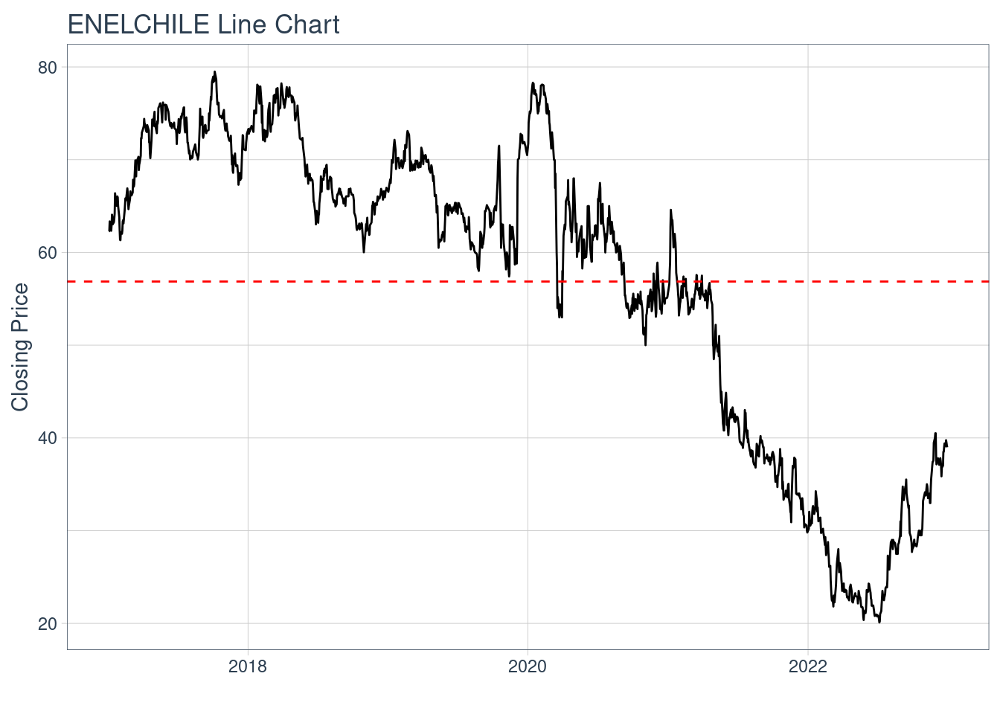
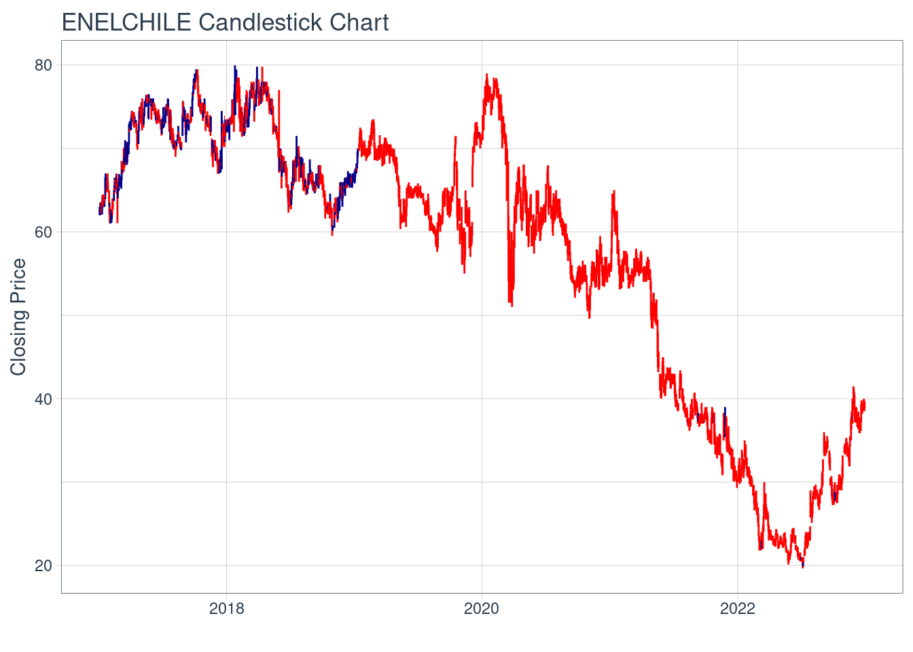
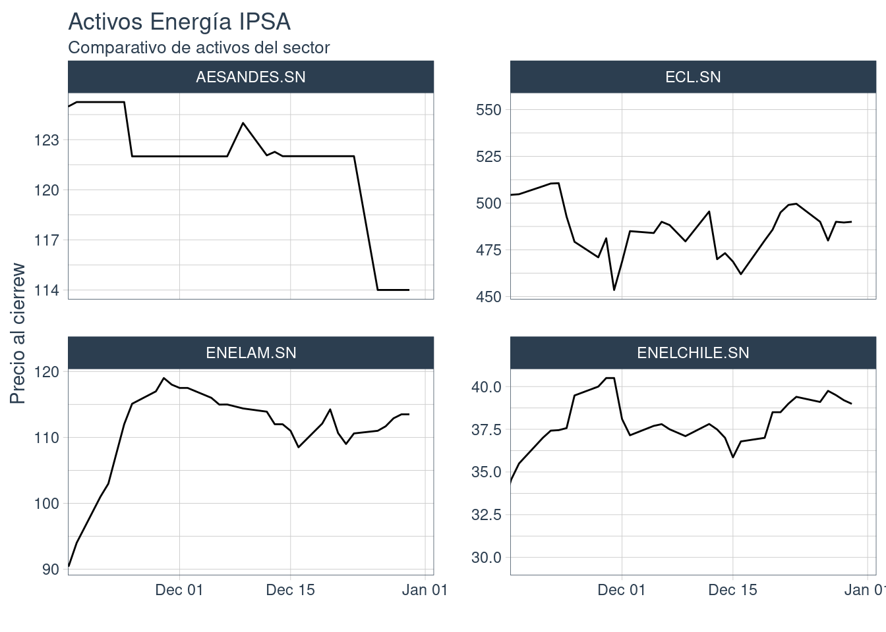

Proyecto Gestión Financiera
Hito 1:
Descripción Activo y Contexto
Fecha de entrega límite: Miércoles 25 de Septiembre 23:59.
Definición
El activo elegido fue Enel Chile S.A. La compañía es una extensión de Enel, empresa italiana. Se dedica a generación, distribución y transformación de energía a lo largo de todo el país.
Enel Chile se formó a partir de una reestructuración que comenzó en el año 2015, en ese entonces la empresa se llamaba Enersis Américas. En esta reestructuración, se aprobó la fusión de las compañías Enersis Chile, Endesa Chile y Chilectra en una estrategia denominada “La Fusión”. En este mismo proceso se procedió al cambio de nombre a la hoy conocida Enel Chile S.A.
Enel Chile es la mayor suministradora de energía del país, debido a esto en relevante exponer los datos nacionales de uso de electricidad. En el paper “Consumption-based carbon emissions, renewable energy consumption, financial development and economic growth in Chile” de Kirikkaleli, Güngör, y Adebayo (2021) se expone un análisis descriptivo de los consumos nacionales de electricidad, el cual se presenta a continuación:

En donde:
CCO2: Emisiones de carbonos basadas en el consumo de energía medida en millones de toneladas de CO2.
GDP: Crecimiento de la economía medido en el PIB per cápita.
ELE: Consumo eléctrico medido en Kw/h.
REN: COnsumo de energía renovables medido en Tw/h.
FD: Crecimiento financiero, medida amplia para el desarrollo financiero teniendo en cuenta su eficiencia, accesibilidad y profundidad.
Por otro lado, también es de suma importancia tener en consideración los precios históricos del activo ENELCHILE, el cual actualmente tiene un valor promedio para el intervalo de años 2017-presente igual a 57. A continuación se presentan dos gráficos que muestran estos datos históricos:
ENELCHILE %>%
ggplot(aes(x = date, y = close)) +
geom_candlestick(aes(open = open, high = high, low = low, close = close)) +
labs(title = "ENELCHILE Candlestick Chart", y = "Closing Price", x = "") +
theme_tq()
Motivación
Se escogió este activo en particular debido al compromiso con el medio ambiente y a indicadores ASG (Ambiental, Social y Gobernanza), alguno de sus objetivos son:
Alcanzar un 80% de energía renovable en su matriz de generación para 2024, reducir las emisiones de gases de efecto invernadero en un 40% para 2025 y aumentar la eficiencia energética en un 20% para 2030.
Como menciona el Diario Financiero (DF) Enel Chile sostiene una estrategia de sostenibilidad para llegar a ser una empresa carbono neutral al año 2040. Para lograr este objetivo, Enel destinará US$1.700 millones a temas ASG, los que principalmente se gastarán en la construcción de nuevas plantas de energías renovables.
Asimismo, varios documentos de la WOS (Web of Science) sustentan la iniciativa medioambiental de Enel Chile, principalmente con tarifas variables que logren cambiar los hábitos de uso de energía, homeostaticidad energética, entre otros.
Todos estos puntos fomentan el interés especifico sobre este activo por sobre los demás activos energéticos incluidos en el IPSA.
Contexto
El IPSA tiene 4 componentes de la industria de energía, Enel Chile S.A, Enel Latinoamerica S.A, Engie Energia Chile S.A y AES Gener SA. Los primeros 2 corresponden a la empresa italiana Enel. A continuación se presentan los precios históricos de cada una de estas acciones:

Si bien los montos de los precios dependen de otros factores, tales como la cantidad de acciones que componen la compañía, si se observan tendencias entre estas. La más clara es que ambas empresas de Enel siguen un mismo patrón de precios, lo que hace sentido ya que pertenecen al mismo grupo. Lo que también se aprecia, es que cuando el precio de Enel aumenta, tanto de Engie Energia Chile S.A como el de AES Gener SA disminuye. Esto se puede deber a que la variación en la participación que tiene en la industria cada uno de estas influye inversamente en la otra (a mayor participación de Enel Chile, menor será la de el resto de los suministradores nacionales).
También es interesante ver las rentabilidades que ha tenido el activo elegido:

A partir de esto se puede ver que Enel Chile ha tenido un crecimiento en la mayoría de los años, aunque se puede apreciar una baja de casi un 50% en el año 2021 debido a la pandemia de Covid-19. Cabe destacar que según analistas de Yahoo Finance, Enel Chile tendrá un crecimiento estimado cercano al 65,80%.
Modelo Binomial
El Modelo Binomial de Valoración de Opciones (BM, por sus siglas en inglés) también conocido como Cox-Ross-Rubinstein introducido en Cox, Ross, y Rubinstein (1979), es un modelo que estima el valor de una opción en t=0 teniendo pagos futuros en diferentes estados (usualmente “Up” y “Down”). Este Modelo Binomial asume que no hay posibilidad de arbitraje en el mercado, determinando el precio que sigue un activo en un random walk, en donde en cada paso (tiempo) existe una probabilidad de que el precio suba o baje (Ahmad, 2018).

Para calcular la valoración de la opción con el Modelo Binomial, es necesario definir \(S_0\), que corresponde al precio actual del activo. Además, se deben determinar los valores de \(u\) y \(d\), que representan los factores por los cuales se multiplica \(S_0\) en cada estado para obtener el precio del activo en cada caso en el siguiente período (t = 1):
\[ S_1 = \begin{cases} S_0\cdot u \text{ en el estado ``Up"} \\ S_0\cdot d \text{ en el estado ``Down"}\end{cases} \]
También se debe calcular la probabilidad \(P\) de que ocurra el caso “Up”, la probabilidad de que ocurra el otro caso (“Down”) simplemete quedaría en \((1-P)\). Para el calculo de la porobabilidad se usa la siguiente ecuación:
\[ P = \frac{e^r-d}{u-d} \]
Donde \(r\) es la tasa libre de riesgo.
Por otro lado se deben calcular \(C_u\) y \(C_d\) los cuales se obtienen como los precios de una opción europea:
\[ C_u = max(0, S_0\cdot u-k)\\ C_d = max(0, S_0\cdot d-k) \]
Finalmente el precio de la opción se calcula de la siguiente manera:
\[ V = \frac{C_u\cdot P + C_d\cdot (1-P)}{1+r} \]
binomial_model <- function(cu, p, cd, rf) {
return((cu*p + cd*(1-p))/(1+rf))
}
S <- tail(ENELCHILE$close,1) # Precio actual del activo subyacente
K <- 38 # Precio de ejercicio de la opción
T <- 1 # Tiempo hasta la expiración (en años)
r <- 0.0642 # Tasa de interés libre de riesgo
u <- 1.1 # Factor de crecimiento en un paso hacia arriba
d <- 0.9 # Factor de crecimiento en un paso hacia abajo
Su <- S*u
Sd <- S*d
p <- (1+r-d)/((1+r)*(u-d))
cu <- max(Su - K, 0)
cd <- max(Sd - K, 0)
print(paste("El precio de la opción con el Modelo Binomial es ", binomial_model(cu, p, cd, r)))[1] "El precio de la opción con el Modelo Binomial es 3.54418880315908"Modelo Black and Scholes (BS)
black_scholes <- function(S, K, t, r, sigma) {
d1 <- (log(S/K) + (r + 0.5 * sigma^2) * t) / (sigma * sqrt(t))
d2 <- d1 - sigma * sqrt(t)
N_d1 <- pnorm(d1)
N_d2 <- pnorm(d2)
precio_call <- S * N_d1 - K * exp(-r * t) * N_d2
return(precio_call)
}
rendimientos <- diff(log(ENELCHILE$close))
sigma<-sd(rendimientos[2:length(rendimientos)])
volatilidad<-var(rendimientos[2:length(rendimientos)])
S<- tail(ENELCHILE$close,1) # Precio actual del activo subyacente
K<- 38 # Precio de ejercicio de la opción
R<- 0.0642 # Tasa de interés libre de riesgo
t <- 1 # Tiempo hasta la expiración (en años)
print(paste("El precio de la opción con el Modelo Black and Scholes es ", black_scholes(S, K, t, R, sigma)))[1] "El precio de la opción con el Modelo Black and Scholes es 3.35294022617099"Comparación de modelos
Ambos modelos son comúnmente utilizados en las finanzas. Por lo tanto, se puede afirmar que cuentan con respaldo y fundamentos sólidos. Según el artículo de (Ahmad, 2018), los resultados del precio de la opción calculados con ambos modelos muestran una correlación muy cercana a 1, lo que significa que si el precio de la opción aumenta con un modelo, también lo hace con el otro. Sin embargo, esto no implica que ambos modelos proporcionen el mismo precio, como se puede observar en el ejercicio realizado anteriormente.
Estos modelos difieren en algunas cosas, tales como:
Precio del activo subyacente: En modelo Black and Scholes sigue una distribución lognormal mientras que el Binomial multiplica el valos \(S_0\) con dos opciones (\(u\) y \(d\))
Debido a lo anterior, el modelo de Black and Scholes es continuo y el Binomial discreto.
El modelo BS sirve solo para opciones europeas, mientras que el Binomial también sirve para opciones americanas.
También tienen algunas similitudes:
Ambos utilizan el precio actual del activo subyacente.
Ambos usan la tasa libre de riesgo.
En este caso los dos se usaron para un periodo de tiempo.
Ambos consideran la volatilidad del activo.
En resumen, el modelo de Black-Scholes constituye una buena herramienta analítica para valorar opciones europeas y supone movimientos continuos en las cotizaciones del mercado. En cambio, el modelo Binomial ofrece mayor flexibilidad al emplear una estructura de árbol que facilita la valoración tanto de opciones europeas como americanas. Elegir uno u otro modelo dependerá del tipo específico de opción que se esté analizando y las inferencias que se quieran hacer en relación a cómo evolucionarán los precios en el mercado financiero.
Hito 2 (en revisión):
Análisis de Largo Plazo
Caracterización deuda
Enel Chile mantiene deudas de prestamos bancarios por monedas y vencimiento, el que se detalla a continuación:

Del mismo estado financiero, se detallan los siguientes instrumentos financieros:
- Activos financieros no derivados: Costo amortizado, Activos financieros registrados a valor razonable con cambios en otros resultados integrales y Activos financieros registrados a valor razonable con cambios en resultados.
- Efectivo y equivalentes al efectivo
- Deterioro de valor de los activos financieros
- Pasivos financieros excepto derivados
- Derivados y operaciones de cobertura
- Baja de activos y pasivos financieros
- Compensación de activos y pasivos financieros
- Contratos de garantías financieras
La inversiones de al compañía son colocadas segun el siguiente criterio mencionado en su estado financiero:
“Las inversiones de excedentes de caja se efectúan en entidades financieras nacionales y extranjeras de primera línea con límites establecidos para cada entidad.
En la selección de bancos para inversiones se consideran aquellos que tengan calificación investment grade, considerando las tres principales agencias de rating internacional (Moody’s, S&P y Fitch).
Las colocaciones pueden ser respaldadas con bonos del tesoro de Chile y/o papeles emitidos por bancos de primera línea, privilegiando estos últimos por ofrecer mayores retornos (siempre enmarcado en las políticas de colocaciones vigentes).”
A continuación se presenta la clasificación de instrumentos financieros por naturaleza y categoria:

Caracterización de emisiones históricas (Aplicación cap. 20)
Segun el último estado financiero emitido por la empresa Enel Chile en junio 2023, la compañía tiene 69.166.557 miles de acciones ordinaria en circulación. En la base de la CMF no existen registros de emisiones de acciones, sin embargo si hay una inscropción en el registri de valores por una emisión de 10.000.000.000 acciones de pago ordinarias para así aumentar el capital de la empresa en $820.000.000.000, teniendo cada acción un precio de $82.
No existe registro del procedimiento utilizado para la emisión de estas acciones, solo se detalla que la junta extraordinaria de accionistas se llevó a cabo el 20 de diciembre de 2017 y que cuya acta se redujo a escritura publica el 28 de diciembre del mismo año.
Relación con activos derivados
Para protección de la empresa, esta busca cobertura frente a posibles riesgos que puedan alterar los objetivos de la compañía. Ellos mismos señalan “Los derivados mantenidos por el Grupo corresponden fundamentalmente a operaciones contratadas con el fin de cubrir el riesgo…”
Enel Chile toma en consideración y protección frente los siguientes riesgos:
- Riesgo de tasa de interés
- Riesgo de tipo de cambio
- Riesgo de commodities
- Riesgo de liquidez
- Riesgo de crédito
A continuación se desglozan los derivados de Enel Chile:

Los derivados se registran por su valor razonable en la fecha del estado de situación financiera. En el caso de los derivados financieros, si su valor es positivo, se registran en el rubro “Otros activos financieros”, y si es negativo, en el rubro “Otros pasivos financieros”. Si se trata de derivados sobre commodities, el valor positivo se registra en el rubro “Cuentas comerciales por cobrar y otras cuentas por cobrar” y si es negativo en el rubro “Cuentas comerciales y otras cuentas por pagar” (EEFF Enel Chile, Junio 2023).
Reporte grupal
Se decidieron los siguientes pesos del portafolio basándose en distintos factores, pero principalente la estimación de crecimiento a un año de cada uno de los activos proporcionada por Yahoo Finance. Los porcentajes del portafolio serán los siguientes:
Enel: 50%
Banco de Chile: 30%
Parque Arauco: 20%
En primer lugar, se determinó que Enel Chile tendra un 50% de peso en el portafolio debido al pronostico de crecimiento que tendrá en el proximo año (65.80%). Además en los ultimos 2 años ha obtenido un retorno promedio de 37.5%, mayor que los activos elegidos en las otras industrias. Otro aspecto que nos hizo elegir un peso mayor que las otras compañia es su compromiso con el medio ambiente, aspecto que cada vez es mas valordo. Por otro lado, la empresa ha invertido fuertemente en nuevos proyectos que probablemente demuestren mayores retornos en el futuro.
Por otro lado, al Banco de Chile se le asignó un 30% de peso en el portafolio debido a su liderzago en la industria bancaria en terminos de rentabilidad y ha jugado un papel sumamente importante a lo largo de los años en la industria financiera. Junto a esto, la proyección del banco en terminos de crecimiento para los proximos años, es positiva y cercana a un 11.8%.
Finalmente, a Parque Arauco se le otorgó un 20% del portafolio debido a la diversificación del modelo de negocios que han implementado en los últimos años. El ingreso al negocio de los edificios multifamily podría ser una razón de gran crecimiento para la empresa en el futuro, debido a que actualmente ya operan dos edificios en Santiago, tienen proyectos que estarán operando en el corto plazo en Perú y Colombia, y tienen planes de seguir ampliando esta cantidad. Considerando la gran demanda de arriendo que existe hoy en día, la empresa podría verse muy beneficiada con la implementación de este nuevo negocio.
Caso Grupal (No requerido para versión 2024)
Los datos se obtuvieron en su mayoría del Estado Financiero de la empresa Enel Chile a junio de 2023. Los datos que no pudieron ser encontrados se supusieron a partir de la misma información entregada en ese documento.
El caso escogido para replicar con nuestro activo fue el del capítulo 28 del libro guía del curso “Finanzas Corporativas” de Ross, en el cual se evalúan tres opciones. A continuación, se presentan los datos:


A partir de lo anterior, se puede determianar que el la opción 1 es la mejor debido a que obtiene el VPN mayor. Las opciones 2 y 3 dan un valor menor a la 1, lo que no se consideran optimas en este escenario.
Bibliografía
Ahmad Dar, A., Anuradha, N., 1 Department of Mathematics and Actuarial Science, B S Abdur Rahman Crescent University, IN, & 2 Department of Management Studies, B S Abdur Rahman Crescent University, IN. (2018). Comparison: Binomial model and Black Scholes model. Quantitative Finance and Economics, 2(1), 230–245. https://doi.org/10.3934/QFE.2018.1.230
Referencias
Cox, John C., Stephen A. Ross, y Mark Rubinstein. 1979. “Option pricing: A simplified approach”. Journal of Financial Economics 7 (3): 229–63. https://doi.org/10.1016/0304-405X(79)90015-1.
Kirikkaleli, Dervis, Hasan Güngör, y Tomiwa Sunday Adebayo. 2021. “Consumption-Based Carbon Emissions, Renewable Energy Consumption, Financial Development and Economic Growth in Chile”. Business Strategy and the Environment 31 (3): 1123–37. https://doi.org/10.1002/bse.2945.